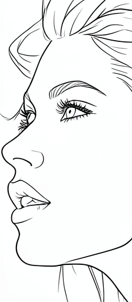

النتيجة العملية
ولّد FLUX.2 Klein 4B صورة خطية حقيقية بدقة 224 × 512 بكسل، بزمن عامل مُبلّغ25.49 ثانية. انتقلت الصورة نفسها إلى المراجعة دون فلتر، ومنع دخول القلم حتى الاعتماد. صدّرت الخطة على A4 بهامش15 مم وقلم0.2 مم، ثم أُعيد حساب حدودها وزمنها من الملف الفعلي.
اختبار إزالة الخلفية بعد تعديل العامل اكتمل خلال14.528 ثانية على صورة المستخدم، مع مطابقة RGB للأصل و594549 بكسل شفاف فعليًا. لا تنطبق هذه السرعة تلقائيًا على كل الصور أو حالات الذاكرة.
مشكلات أُصلحت أثناء هذه المراجعة
| الأثر | السبب والتصحيح وموقعه | دليل التحقق |
|---|---|---|
| عالٍ | شفافية المحرر كانت الفلاتر والتصدير والهندسة تسطّح Alpha إلى الأبيض. حُفظت الشفافية، مع تغيير مقاس RGBA دون مزج لون مخفي غير صحيح. drawing-simulator/editor_ops.py:10 | اختبارات بكسلات + PNG فعلي من المحرر |
| عالٍ | عودة الخلفية في الخطوط كان التحويل المباشر إلى RGB يعيد اللون المخفي خلف الشفافية. صار الخط المركزي وتتبع الحبر يركبان المرجع على الأبيض صراحة. drawing-simulator/pen_paths.py:21 | اختبار المسارين على مرجع شفاف ومكافئ أبيض |
| عالٍ | قناع التحديد أصبحت معالجة الفلاتر والترميم تحتسب Alpha لقناع التحديد؛ البكسلات البيضاء الشفافة لا تعني تحديد الصورة كلها. drawing-simulator/editor_ops.py:50 | اختبار تغيير المنطقة المختارة وحفظ خارجها |
| عالٍ | صدق قياس المطابقة لا يُنسب قياس الخطة الكاملة إلى خطة استُبعدت منها خطوط قصيرة. يلزم قياس الخطة الحالية. flux-studio/app.js:111 | توليد A5 مختصر في المتصفح؛ القياس القديم مخفي |
| عالٍ | مهلة العامل على Windows إنهاء شجرة العامل، لا مشغّل Python وحده، عند تجاوز المهلة. process_guard.py:5 | اختباران + عامل venv حقيقي؛ العملية التابعة انتهت |
| متوسط | متابعة FLUX متابعة محدودة زمنيًا، مع إعادة اتصال دون اختراع تقدم، ورفض مهمة أخرى أو نتيجة ناقصة. flux-studio/api-client.js:16 | اختبارات ساعة افتراضية + توليد GPU حقيقي |
| متوسط | تراجع المحرر منع تداخل تراجعين غير مكتملين، وحفظ التراجع/الإعادة عند إلغاء ضربة قبل تثبيتها. drawing-simulator/image-editor.js:43 | فحص تزامن + اختبارات رسم وتراجع بكسلية |
| متوسط | تنزيل PNG صار تنزيل المحرر عبر Blob ورابط مؤقت داخل الصفحة، مع إظهار الخطأ واستعادة الأزرار. drawing-simulator/image-editor.js:73 | ملف PNG نُزّل وفُحصت شفافيته ودقة الطباعة |
| متوسط | نطاق التحديد بعد النقل والعكس إعادة حساب الحدود الحقيقية، بما فيها التحديد الفارغ أو الخارج من الصورة. drawing-simulator/image-editor.js:48 | فحص كود + حدود هندسية آلية؛ القص الفعلي اجتاز |
| متوسط | الأرقام رفض كسور العرض والارتفاع وDPI بدل قطعها صامتًا. drawing-simulator/editor_ops.py:18 | اختبارات القيم الكسرية وغير الصالحة |
| متوسط | التحكم أثناء العمل قفل أدوات المحرر أثناء الطلب، وإظهار الخطأ في موضع ثابت، وتحديث وصف DPI بعد الاستعادة. drawing-simulator/image-editor.js:36 | فحص الكود وحالات خطأ/متابعة في الواجهة |
| متوسط | تشغيل الخادم أضيف تشغيل خلفي مستقل مع فحص خدمة المنفذ والجاهزية، ومنع خادم ثانٍ على المنفذ نفسه. flux-studio/start-server.ps1:2 | تشغيل ناجح ثم تحقق إعادة التشغيل دون نسخة ثانية |
| منخفض | إعلان الخطأ أضيف دور alert لرسالة الخطأ الرئيسية. flux-studio/index.html:55 | فحص DOM؛ لا أسماء مفقودة أو IDs مكررة في الشاشة المفحوصة |
| منخفض | نسخة العمل توضيح التصغير عند الاستيراد؛ ملف المستخدم على القرص لا يُستبدل. flux-studio/app.js:158 | فحص الكود + اختبارات استيراد الصور الكبيرة |
تغطية المراحل والأدوات
الأخضر: فحص آلي أو واجهة موثق ضمن الوصف. الأصفر: مراجعة جزئية أو قيد معروف؛ لا يعني اجتياز كل الحالات.
| المرحلة | المجموعة | ما يغطيه الفحص | نوع الدليل |
|---|---|---|---|
| 1 | رفع الصور والصقها | PNG/JPG/WebP/BMP/TIFF/GIF، EXIF، حدود الحجم، استيراد مصغر دون تعديل الملف | اختبارات + لصق فعلي |
| 1 | الألوان والسطوع والتباين والملمس | حفظ اللون افتراضيًا؛ الرمادي/الدرجات/الحبر صريحة؛ Alpha مستقل | اختبارات بكسلات |
| 1 | BiRefNet على NVIDIA | طلب فعلي بعد تعديل إدارة العامل؛ RGB محفوظ والشفافية غير مصطنعة | GPU + API |
| 1 | FLUX والقوالب والتوجيهات | تركيب جميع القوالب مفحوص؛ تشغيل حقيقي لقالب خطوط قلم، دقة512، مرجع واحد | اختبارات + GPU واحد |
| 1 | قوالب الفن والمراجع المتعددة | الوصف والتحقق والحدود مفحوصة؛ لم تُولّد كل التركيبات بصريًا | مراجعة كود/اختبارات إعدادات |
| 1 | الفرشاة والممحاة والخط والأشكال | تغيير بكسلات فعلي والتراجع يعيد العينة تمامًا. الممحاة تحذف إلى الشفافية، والدائرة تستجيب للحجم والعتامة واللون | اختبارات هندسية + واجهة فعلية |
| 1 | القلم | ضربة فعلية وسجل عمل؛ مسار التثبيت نفسه مفحوص مع أدوات الرسم | واجهة + مراجعة |
| 1 | تحديد مستطيل والقص وقطارة اللون | قص 85 × 90 من عينة 160 × 160، ثم تراجع إلى160؛ لون القطارة #d2461e | واجهة فعلية |
| 1 | اللاسو والتحريك واليد والتعبئة | رُوجع التنفيذ؛ لم تُختبر كل إيماءة وظروف قص الحافة بصريًا. التعبئة للصورة/التحديد | فحص كود وهندسة جزئي |
| 1 | الفلاتر والترميم | رمادي، عكس، تباين آلي، تمويه، تنظيف، شحذ، عتبة، ترميم؛ حفظ Alpha | اختبارات + تصدير واجهة |
| 1 | الأبعاد والتدوير والقلب وDPI | تحقق القص والحدود وحفظ الشفافية وPNG-DPI والأرقام الصحيحة | اختبارات بكسلات |
| 1 | التراجع والإعادة والاستعادة والحفظ | منع سباق التراجع؛ إلغاء الضربة لا يثبتها؛ حفظ PNG قابل للتنزيل | اختبارات + واجهة |
| 2 | مراجعة واعتماد الصورة | مطابقة خرج FLUX حرفيًا؛ القلم محظور قبل الاعتماد الصريح | اختبار من 1 إلى3 |
| 2 | الإبطال بعد التعديل | تعديل المدخل يبطل الاعتماد والخطوط والرد المتأخر | اختبارات Workflow |
| 3 | أنواع المسارات | مطابقة الحبر، خط مركزي، وتتبع كتل؛ ضوضاء وعتبة ومكونات وتقاطع واختصار | اختبارات المحركات |
| 3 | الورق والهوامش والقلم | 11 مقاسًا قياسيًا ومخصص؛ الاتجاه والحجم الفعلي، والهامش يشمل أثر القلم | اختبارات مصفوفة + A4/A5 واجهة |
| 3 | الاختيار والاستبعاد والتراجع | اختيار ضربة برقمها، استبعادها، إبطال القياس ثم استعادته عند التراجع | واجهة فعلية |
| 3 | المحاكاة والسرعات والترتيب | تشغيل/إيقاف/إعادة؛ لا تغيير لسياسة الوقت؛ الحساب يطابق JSON | واجهة + إعادة حساب مستقلة |
| 3 | SVG وJSON | ملفان فعليان؛ أبعاد صحيحة،1168 ضربة، دون صورة نقطية داخل SVG | قراءة وإثبات الحدود |
| عام | الإتاحة والتخطيط | التركيز المرئي، أسماء الحقول، إظهار الفشل، لا IDs مكررة ولا تمرير أفقي في العرض الحالي | تدقيق جزئي؛ ليس شهادة WCAG |
خرج النموذج والخطة المصدّرة

IoU:97.87٪، استرجاع الحبر98.78٪، دقة الحبر99.06٪. خطأ الدرجات الرمادية داخل الحبر19.28٪؛ تطابق القناع لا يعني تطابق بكسلات الرمادي أو الألوان.
خطأ إعادة حساب الزمن من إحداثيات JSON بعد التقريب: 0.000462 ثانية. جميع مراكز المسارات وسماكة القلم داخل الهامش. الزمن النظري ليس قياسًا على ذراع.
أدوات الرسم وتراجعها
| الأداة | بكسلات تغيّرت فعليًا | بعد التراجع |
|---|---|---|
| brush | 816 | مطابق تمامًا |
| erase | 777 | مطابق تمامًا |
| line | 826 | مطابق تمامًا |
| rectangle | 1840 | مطابق تمامًا |
| ellipse | 1632 | مطابق تمامًا |
رمادي المحرر المصدّر احتفظ بـAlpha تمامًا. القص الفعلي 85 × 90 عاد إلى 160 × 160 بعد التراجع؛ التقطت القطارة اللون الصحيح.
حزمة الفحوص
47 اختبار Python لأدوات الصورة والخلفية والخطوط، و14 للتجهيز، و23 للتوليد والتدقيق، و2 لإدارة العمليات، و31 اختبار JavaScript. إضافة إلى3 مجموعات فحص هندسة/تزامن بالمحرر، واختبارات واجهة وملفات فعلية. لم تُحسب النقرات كاختبارات آلية إضافية.

ما لا يمكن وصفه بأنه100٪
- لم تُختبر ذراع أو معايرة ورقة أو تسارع/اهتزاز/ضغط قلم. ملفات JSON تحمل simulationOnly=true.
- لم تُختبر بصريًا كل القوالب الفنية والدقات والمراجع المتعددة على GPU. اختبارات تركيب الوصف لا تثبت جودة الصورة الفنية.
- المحرر ليس بديل Photoshop كاملًا: لا نظام طبقات كامل ولا إدارة ألوان ICC/HDR معايرة. الممحاة تحذف إلى الشفافية والتعبئة للصورة أو التحديد.
- اللاسو وبعض إيماءات التحريك واليد لم تُختبر بكل ظروف الحافة. لا شهادة WCAG كاملة ولا اختبار قارئ شاشة شامل.
- صور الجلسة وسجل آخر8 نتائج في الذاكرة؛ إعادة تحميل الصفحة تفقد حالة التحرير. نزّل النتائج المهمة. الاستيراد قد ينشئ نسخة عمل حتى2000px و4ملايين بكسل؛ الملف الأصلي على القرص لا يتغير.
- القلم الأسود لا يمثل اللون والتدرجات حرفيًا، والتفاصيل الأصغر من قطره ليست مضمونة. بعض الصور أو المساحات السوداء الكبيرة تتجاوز الحدود ويُرفض استخراجها صراحة.
- قفل الحساب ينسّق FLUX وBiRefNet داخل هذه المنصة فقط؛ لا يتحكم في استهلاك برامج GPU الأخرى. لم تُقَس كل أحجام الورق بقياس طباعة فعلي.
المهارات التي قرئت وكيف استُخدمت
| المهارة | دورها وحدودها |
|---|---|
| targeted-debugging | تتبع السبب قبل التصحيح وربطه بدليل. |
| focused-testing / minimal-code-edit | اختبارات مرتبطة بالأثر وإصلاحات محدودة دون إعادة بناء المنصة. |
| ui-ux-pro-max / frontend-design | اتساق الواجهة ووضوح الحالات والتركيز والخطأ؛ لا تثبت دقة نموذج أو مسار. |
| web-design-guidelines | قواعد Vercel للإتاحة والتفاعل؛ طُبّق المناسب دون ادعاء شهادة شاملة. |
| llmfit-advisor / find-skills | قرئت؛ الأولى لتلاؤم نماذج اللغة وليست قياسًا لـFLUX/BiRefNet، والثانية للاكتشاف. لم تحتج المراجعة تثبيت مهارة أخرى. |
نسختا frontend-design وui-ux-pro-max في مساري المهارات لهما المحتوى النصي نفسه؛ اختلاف تنسيق الأسطر فقط.
تشغيل مستقل
من مجلد المشروع:
.\flux-studio\start-server.ps1
السكربت يشغّل خدمة خلفية مخفية أو يتحقق من الخدمة القائمة. هذا ليس تشغيلًا تلقائيًا عند إقلاع Windows. مرجع قواعد الواجهة: Vercel Web Interface Guidelines.